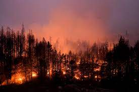

Effects of Climate Change

Climate change refers to the long-term changes in the Earth's climate, including temperature, precipitation, and sea level. These changes are largely caused by human activities, such as burning fossil fuels and deforestation, which release greenhouse gases into the atmosphere and trap heat from the sun. Climate change is having a significant impact on the planet, affecting everything from wildlife and ecosystems to human health and the global economy. This website explores some of the most significant effects of climate change and what we can do to address them. The effects of climate change are:
- Global Temperature Rise
- Ocean Acidification
- Sea Level Rise
- Extreme Weather Events
-
Global Temperature Rise
One of the most significant effects of climate change is the rise in global temperatures. The Earth's average temperature has already risen by about 1.2°C (2.2°F) since pre-industrial times, and is projected to continue to rise in the coming decades. This increase in temperature is causing a range of impacts, including:- Melting glaciers and sea ice
- More frequent and intense heatwaves
- Changes in precipitation patterns and droughts
- Increased risk of wildfires
- Loss of biodiversity
-
Ocean Acidification
Ocean acidification is a process in which the pH of seawater decreases due to the absorption of excess carbon dioxide (CO2) from the atmosphere. When CO2 dissolves in seawater, it reacts with water molecules to form carbonic acid, which increases the concentration of hydrogen ions (H+) in the water and lowers its pH. This process is similar to what happens when we add carbonated water to a glass and it becomes more acidic. The increased acidity of seawater can have a range of negative impacts on marine ecosystems. For example:- Impacts on marine life: The increased acidity can interfere with the ability of organisms such as coral, shellfish, and plankton to build their shells and skeletons, which are made of calcium carbonate. The increased acidity dissolves calcium carbonate, making it harder for these organisms to grow and survive.
- Food web disruption: Many species of fish and other marine animals rely on shellfish and plankton as a primary source of food. A decline in these populations due to acidification can have cascading effects throughout the food web.
- Changes in ocean chemistry: Ocean acidification can also impact the chemistry of seawater, leading to changes in nutrient availability, and potentially harmful algal blooms.
- Impacts on human communities: Many human communities rely on the ocean for food and livelihoods, and ocean acidification could disrupt these industries.
-
Sea level rise
Sea levels have been rising at an accelerating rate over the past century, and the current rate of sea level rise is faster than at any time in the past 2,000 years. Sea level rise is caused by the warming of the planet, which causes glaciers and ice sheets to melt and the oceans to expand as they absorb heat. Coastal areas around the world are already experiencing the impacts of sea level rise, including more frequent and severe coastal flooding, erosion, and saltwater intrusion into groundwater. Some low-lying island nations and coastal communities are particularly vulnerable to the impacts of sea level rise, and may face the prospect of becoming uninhabitable in the coming decades. -
Extreme Weather
Extreme weather events are becoming more frequent and intense due to climate change, caused by the release of greenhouse gases into the atmosphere by human activities such as burning fossil fuels. Some examples of extreme weather events include heatwaves, droughts, floods, hurricanes, tornadoes, blizzards, and thunderstorms. Extreme weather events can have serious impacts on human health, causing heat stroke, respiratory illness, and other health problems. They can also damage infrastructure, homes, and businesses, and disrupt transportation and communication networks. Climate change is also exacerbating the impacts of extreme weather events, such as by increasing the frequency and intensity of hurricanes and typhoons, and by causing sea levels to rise and coastal areas to be inundated by storm surges.